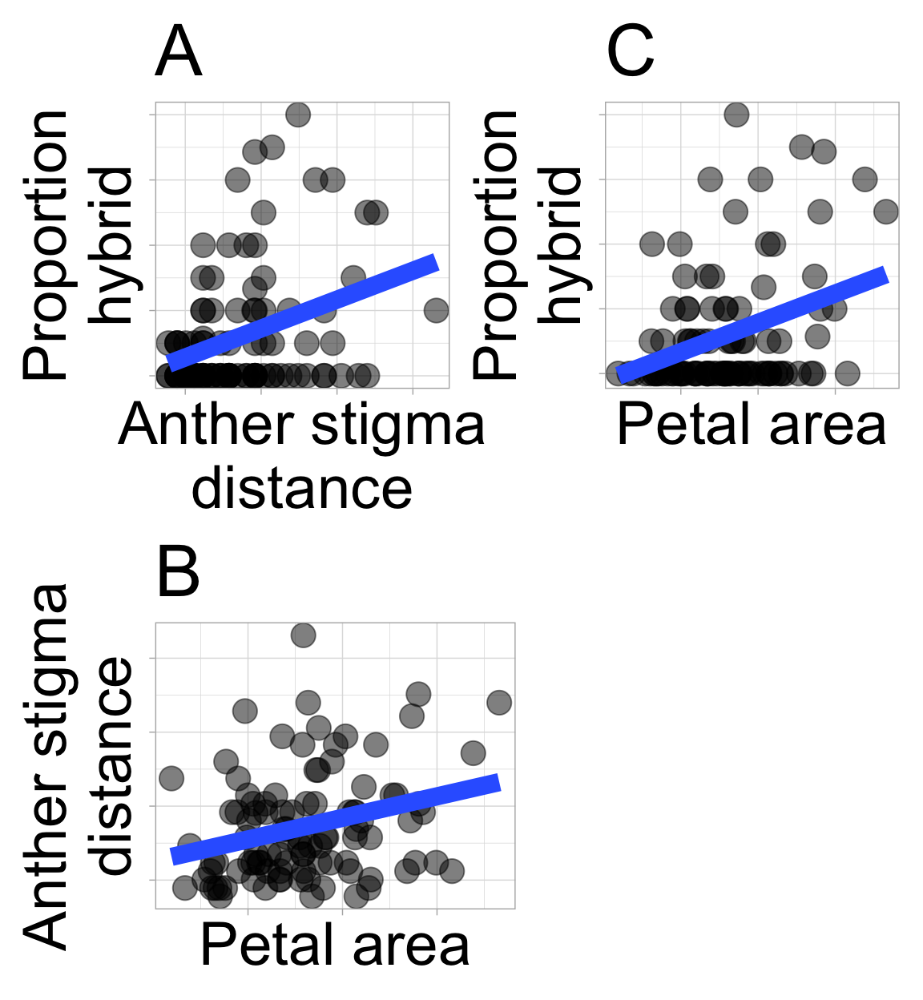

library(GGally)
ggpairs(gc_rils)6. Associations
Motivating Scenario:
You’re curious to know the extent to which two variables are associated and need background on standard ways to summarize associations.
Learning Goals: By the end of this chapter, you should be able to:
Recognize the difference between correlation and causation
- Memorize the phrase “Correlation does not necessarily imply causation,” explain what it means and why it’s important in statistics, and know that this is true of all measures of association.
- Identify when correlation may or may not reflect a causal relationship.
- Memorize the phrase “Correlation does not necessarily imply causation,” explain what it means and why it’s important in statistics, and know that this is true of all measures of association.
Explain and interpret summaries of associations between two binary or two continuous variables
- Describe associations between two binary variables using observed and expected joint probabilities.
- Understand the mathematics behind covariance, correlation, and sums of cross products.
- Use R to calculate and interpret summaries of association.
- Use R to visualize associations between variables.
- Describe associations between two binary variables using observed and expected joint probabilities.
![A matrix of plots showing pairwise relationships among variables in the Clarkia xantiana dataset. The matrix includes bar plots for categorical variables, histograms and density plots for distributions, scatterplots for continuous variables, and boxplots comparing continuous and categorical variables. Correlation coefficients are displayed in the upper triangle for numeric pairs. The figure visually summarizes a range of associations among traits such as petal color, pollinator visitation, petal area, anther–stigma distance, and hybridization rate.](associations_files/figure-html/fig-allcor-1.png)
- Pink flowers seem to have a better chance of receiving at least one pollinator than do white flowers.
- Despite our attempts to genetically disentangle floral traits by creating Recombinant Inbred Lines (RILs), an association between petal area and anther stigma distance remains.
Of course, it’s not just the association between variables we care about — it’s what such associations imply. We want to:
- Predict one variable from another.
- Anticipate what some intervention will do to a biological system.
In future chapters we will see when and how we can achieve these higher goals. But for now, know that while such goals are noble,
We cannot make causal claims or even good predictions from correlations alone.
Correlation is not causation
“Correlation is not causation.” You’ve probably heard that before — but what does it actually mean? Let’s start by unpacking the two key concepts in that statement:
- Correlation means that two variables are associated.
- A positive association means that when one variable is large (or small) the other is often big (or large).
- A negative association means that when one variable is large (or small) the other is often small (or large).
- A positive association means that when one variable is large (or small) the other is often big (or large).
- Causation means that changing one variable produces a change in the other. (For a deeper dive, see Wikipedia.)
Correlation is often confused for causation because it’s easy to assume that if two things are associated, one must be causing the other — especially when the association feels intuitive or lines up with our expectations, but this is wrong. While correlation may hint at causation, a direct cause is neither necessary nor sufficient to generate a correlation. Take the video in Figure 2 – an alien might think this man is starting and stopping the train, but clearly he has nothing to do with the train starting or stopping.
There are three basic reasons why and when we can have a correlation without a causal relationship– Coincidence, Confound, and Reverse causation.
- Coincidence: Chance is surprisingly powerful. In a world full of many possible combinations between variables, some strong associations will arise purely by luck. Later sections of the book will show how to evaluate the “NULL” hypothesis that an observed association arose by chance.

- Confounding: An association between two variables may reflect not a causal connection between them – but rather the fact that both are caused by a third variable (known as a confound). Such confounding may be at play in our RIL data – we observe that anther–stigma distance is associated with the proportion hybrid seed, but anther–stigma distance is also associated petal area (presumably because both are caused by flower growth), which itself is associated with the proportion of hybrids (Figure 3). So, does petal area or anther stigma distance (or both or neither) cause an increase in proportion of hybrid seed? The answer awaits better data, or at least better analyses (see section on causal inference), but I suspect that petal area, not anther stigma distance “causes” proportion hybrid. Unfortunately, we rarely know the confound, let alone its value. So, interpreting any association as causation requires exceptional caution.
- Reverse causation: Figure 4 shows that pink flowers are more likely to receive a pollinator than are white flowers. We assume this means that pink attracts pollinators– and with the caveat that we must watch out for coincidence and confounds, this conclusion makes sense. However, an association alone cannot tell if pink flowers attracted pollinators or if pollinator visitation turned plants pink. In this case the answer is clear – petal color was measured for RILs in the greenhouse, and there’s no biological mechanism by which a pollinator could change petal color. However, these answers require us to bring in biological knowledge – the data alone can’t tell us which way the effect goes.
![Two bar plots showing the relationship between petal color (pink or white) and pollinator visitation (visited or not visited). The left plot places visit status on the x-axis and shows the proportion of pink and white flowers within each visit category. The right plot reverses this, placing petal color on the x-axis and showing the proportion of flowers that were visited or not. Both plots show that pink flowers are more likely to be visited, but the choice of x-axis can influence how we interpret the relationship, emphasizing the importance of considering — but not assuming — causal direction.](associations_files/figure-html/fig-switchx-1.png)
This issue isn’t just theoretical — I’m currently grappling with a real case in which the direction of causation is unclear. In natural hybrid zones, white-flowered parviflora plants tend to carry less genetic ancestry from xantiana (their sister taxon) than do pink-flowered parviflora plants. There are two potential explanations for this observation:
Perhaps, as the RIL data suggests, white-flowered parviflora plants are less likely to hybridize with xantiana than are pink-flowered parviflora, so white-flowered plants have less xantiana ancestry (pink flowers cause more gene flow).
Alternatively, all xantiana are pink-flowered, white-flowered parviflora can be white or pink. So maybe the pink flowers are actually caused by ancestry inherited from xantiana (more gene flow causes pink flowers).
I do not yet know the answer.
# YANIV ADD FIGURE FROM SHELLEY
Making things independent
If we cannot break the association between anther stigma distance and petal area by genetic crosses maybe we could do so by physical manipulation. For example, we could use tape or some other approach to move stigmas closer to or further from anthers.
Causation without correlation
Not only does correlation not imply causation, but we can have causation with no association.
![Scatterplot showing NBA players' height (x-axis) versus their Value Over Replacement Player (VORP) (y-axis). Each point represents a player. A faint blue regression line runs slightly upward but remains almost flat, illustrating a very weak positive association between height and VORP. Notable players are labeled: Shai Gilgeous-Alexander (6'4.5"), Giannis Antetokounmpo (6'11"), and Nikola Jokić (6'11.5"). The plot visually emphasizes that despite differences in height, there is little to no clear relationship between a player’s height and their value contribution above replacement level.](associations_files/figure-html/fig-VORP-1.png)
No one will doubt that height gives a basketball player an advantage. Yet if we look across all NBA players, we see no relationship between height and standard measures of player success (e.g. salary, or “Value of Replacement Player” etc Figure 5), How can this be? The answer is that to make it to the NBA you have to be very good or very tall (and usually both) – so (6 foot 4, Shai Gilgeous-Alexander) has a value just a bit higher than (6 foot 11) Giannis Antetokounmpo.
A related, but different issue – known as Countergradient variation is observed in ecological genetics. Here, measures of some trait, like growth rate, are similar across the species range (e.g. between northern and southern populations), but when grown in a common environment, the populations differ (e.g. the northern population grows faster). This might reflect divergence among population as a consequence of natural selection that may favor greater efficiency or acquisition of energy in northern regions.
Making predictions is hard
Making predictions is hard, especially about the future.
– Attributed to Yogi Berra
Associations describe data we have – they do not necessarily apply to other data. Of course, understanding such associations might help us make predictions, but we must consider the range and context of our data.
Their are different kinds of predictions we might want to make.
We may want to predict what we would expect for unsampled individuals from the same population as we are describing. In this case, a statistical association can be pretty useful.
We may want to predict what we would expect for individuals from a different population than what we are describing. In this case, a statistical association might help, but need some care.
We may want to predict what we would expect if we experimentally changed one of the value of an explanatory variable (e.g. if “I experimentally decreased anther-stigma distance, would plants set more hybrid seed?”) This is a causal prediction!
Misalignment between expectations and the reality is a common trope in comedy and drama. For example, hilarity may ensue when an exotic dancer in a firefighter or police costume is mistaken for a true firefighter or policeman (See the scene from Arrested Development on the right (youtube link)). Such jokes show that we have an intuitive understanding that predictions can be wrong, and that the context plays a key role in our ability to make good predictions.
We again see such a case in our RIL data - leaf water content reliably predicts the proportion of hybrid seed set at three experimental locations, but is completely unrelated to proportion of hybrid seed at Upper Sawmill Road (location: US, Figure 6).
Code to make the plot, below.
filter(ril_data, !is.na(location)) |>
ggplot(aes(x= lwc,y =prop_hybrid))+
facet_wrap(~location,labeller = "label_both",nrow=1)+
geom_point(size = 2, alpha = .2)+
geom_smooth(method = "lm",se = FALSE, linewidth = 2)+
labs(x = "Leaf water content",
y = "Proportion hybrid")+
scale_x_continuous(breaks = seq(.78,.88,.04))There is still value in finding associations
The caveats above are important, but they should not stop us from finding associations. With appropriate experimental designs, statistical analyses, biological knowledge, and humility in interpretation, quantifying associations is among the most important ways to summarize and understand data.
The following sections provide the underlying logic, mathematical formulas, and R functions to summarize associations.
Let’s get started with summarizing associations!
The following sections introduce how to summarize associations between variables by:
- Describing associations between a categorical explanatory and numeric response variable including differences in conditional means, and Cohen’s D, and tools for visualizing associations between a categorical explanatory variable and a numeric response.
- Describing associations between two categorical variables, including differences in conditional proportions, and the covariance.
- Describing associations between two continuous variables, including the covariance and the correlation.
Then we summarize the chapter, present practice questions, a glossary, a review of R functions and R packages introduced, and present additional resources.
Luckily, these summaries are remarkably similar, so much of the learning in each section of this chapter reinforces what was learned in the others.